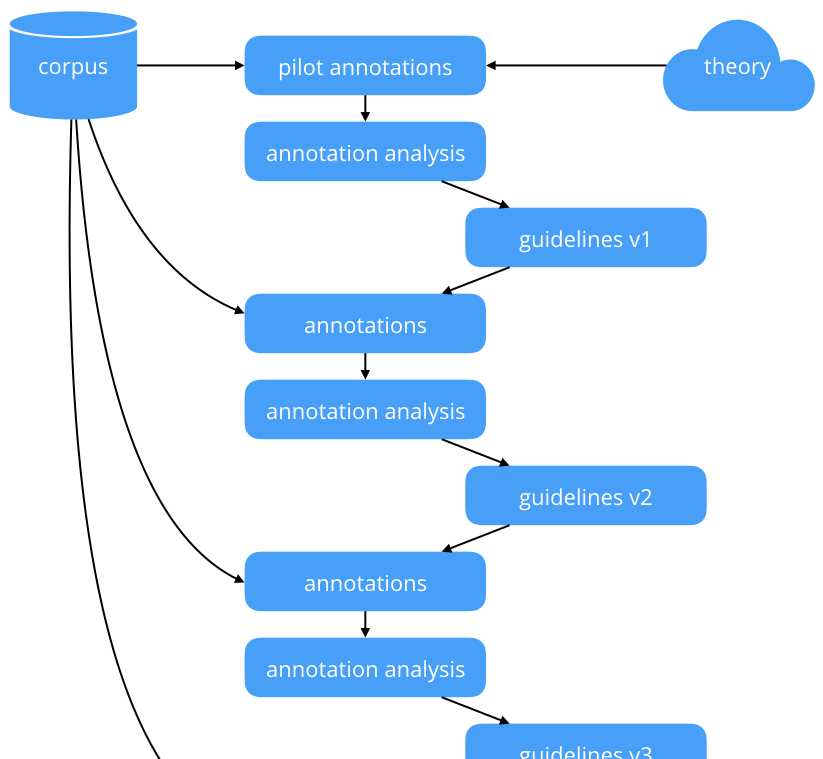
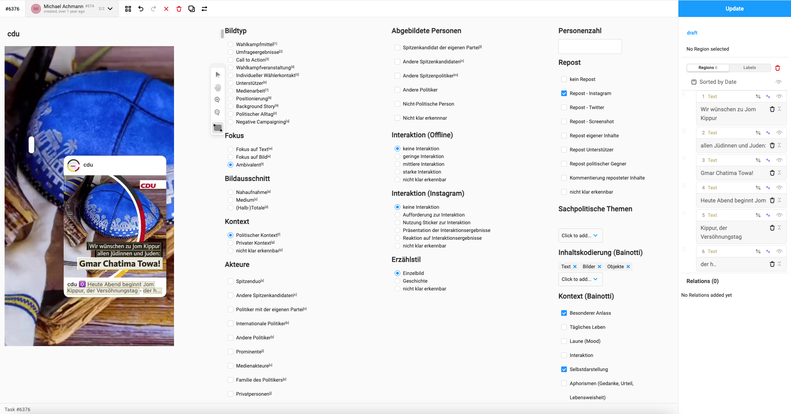
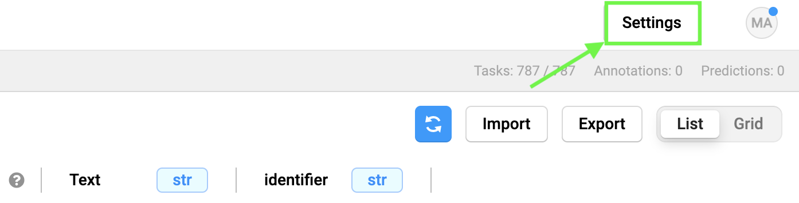
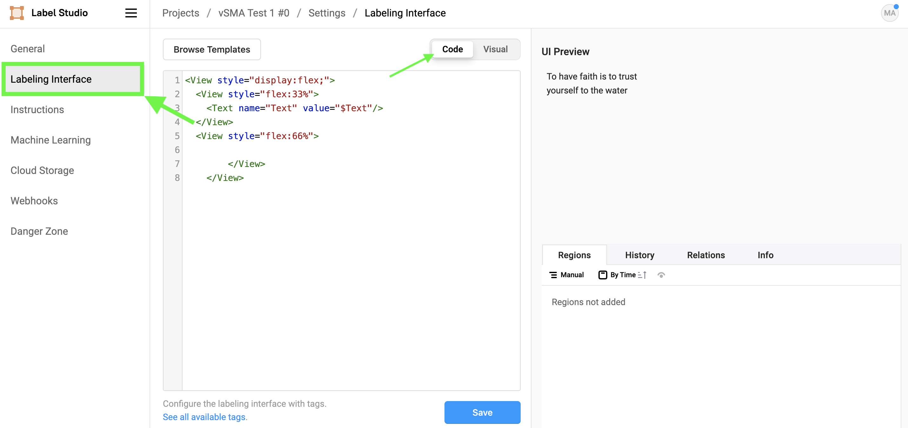
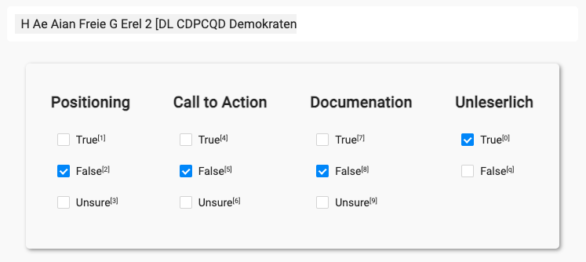

![]()
!pip -q install label-studio-sdkHuman Annotations
In computational social media analysis, validation is crucial for ensuring the accuracy and reliability of text analysis methods. As highlighted by Birkenmaier, Lechner, and Wagner (2023), validation entails both internal and external processes. Internal validation assess a model’s plausibility and quality within the data context and tends to rely researchers’ judgment, whereas external validation compares model outputs with external benchmarks, such as human-annotated labels. Baden et al. (2022) further emphasize the significance of continuous evaluation and transparent reporting of validation steps and results. Additionally, they criticize the the frequent oversight in evaluating the validity of the actual measures. This problem arises when researchers focus more on the technical performance of their models, neglecting to verify whether these models accurately represent the intended social phenomena. This gap can lead to results that are statistically sound but lack real-world relevance.
In context of our research projects we’ll focus on external validation through non-expert annotations using LabelStudio, a practical aspect of the validation approach. Our focus will be on generating gold standard data for an external validation. This is crucial because external validation, through methods like crowd annotation, directly assesses how well computational models perform against real-world data. The setup of LabelStudio projects and the creation of annotation manuals are key steps in this process, ensuring that the data used for validation is accurately and consistently labeled, providing a solid foundation for assessing model performance. Although the evaluation of the actual measures is important (Baden et al. 2022), our discussion will concentrate on these practical aspects of external validation.
Having humans coders annotate your social media content is the first part of generating a gold standard dataset. The second step will the the evaluation of the annotations, to validate their quality. We will use the interrater agreement as measurement for the coherence of our annotations. We will focus on this topic in the next session.
Creating an Annotation Manual
Developing an annotation manual for social media text data is an iterative process. We start with a theoretical understanding of the phenomenon to be annotated, and describe it for easy application by annotators, minimizing ambiguity. The process optimally involves multiple rounds of annotation, each refining the guidelines through discussions of disagreements and revisions. Pilot annotations should be done by those familiar with the theory, focusing on major disagreements to refine categories and examples. As guidelines evolve, both the guidelines and annotators improve, while we need to make sure that the guidelines that are understandable even to less trained individuals (Reiter, Willand, and Gius 2019; Reiter, n.d.). In this section I will provide some examples for annotation manuals and some practical adivce to create effective annotation guidelines for social media analysis.

Practically speaking, get started by creating a document which can be shared online, e.g. on Google Docs or CodiMD. I suggest to structure you document as follows:
.
├── Introduction
│ ├── Outline the research project:
│ │ ├── What is your goal?
│ │ └── Why do you need the help of annotators?
│ ├── What can annotators expect?
│ └── How are they being reimbursed?
├── Overview of all steps, e.g.
│ ├── How and where to register
│ └── When to act
├── Software Manual (LabelStudio HowTo)
│ ├── Annotation Interface
│ └── Keyboard Shortcuts
├── Introduction to Variables
│ ├── Definition for each variable / Values
│ └── Instructions for each variable / Values
└── Examples for each Variable
├── Positive Examples
└── Negative ExamplesMake use of tables, images and formatting to guide the attention of the readers to the right places. Put emphasize on the most important parts of the annotation manual to gain good quality annotations. I have created several annotation projects in the past. The quality of the manuals started evolving as well. Take a look at the examples for a better understanding of good formatting and how to present examples to your annotators:
- Coding categories for images (German)
- Coding policy issues for text (German)
- Coding multiple content variables for text (German)
Based on my personal experience I would recommend to:
- Focus on few variables per annotation project, due to two reasons: On the one hand it is easiert to read a short annotation manual for one or few variables and then keep annotating. We do not need to keep switching between tasks and thus to look up the definition of the one or the other variable again and again. On the other hand the software which we are going to use (LabelStudio) has a neat keyboard shortcut feature: This enables annotators to quickle select values by pressing buttons on their keyboard. The less options, the better shortcuts can be used (and remembered).
- Generally speaking: Less is more. Keep the amount of variables low. Stick to one modality at a time. Keep the total amount of annotations per annotator at a manageable level (e.g. 2-3 hours of work) and ask the participants to take breaks when coding!
- Through my annotations B.A. Students reached consistently lower annotation quality than M.A. / M.Sc. students.
- To improve the quality I have experimented with Google Forms and generated a quiz. We can provide the correct solutions to questions, ask future annotators to take the quiz and they will receive some feedback on a test round of coding before starting the actual project.
- In another approach to improve the quality I asked to participants first code a small subsets and take a qualitative look at the results. I gave feedback and resolved conflicts before adding the annotators to my actual project.

Setup an annotation project
We are going to use Label Studio as an annotation interface. While we do not need to use a specialized software, Label Studio makes the process of setting up annotation projects, inviting and organizing annotators, and the actual annotation a lot easier. A low resource alternative to specialized annotation software is Excel: Convert your text DataFrame to an Excel sheet, delete all but the text columns, add columns for your variables, and write a detailed annotation manual for your coders how to fill in your Excel sheet. These steps are easy to reproduce and quick to implement, yet the specialized software makes sure that annotator input follows your standard as you may define a detailed interface, it shuffles the order of annotations, and it offers keyboard shortcuts to speed up annotations. Additionally (when using the Enterprise version which is free for researchers), it tracks time spent on annotations and calculates first scores to estimate interrater reliability. My Medium story “How to Accelerate your Annotation Process for Visual Social Media Analysis with Label Studio” goes into more detail.
For our seminar, we are going to use a self-hosted version of Label Studio. The biggest draw back is the limitation of one annotation per document. We can, however, overcome this limitation by setting up the same project three times and calculating interrater agreement measures ourselves (we are, of course, going to use standardized measures like Cohen’s \(\kappa\), see Agreement & Evaluation).
Important
The paragraphs below showcase the setup of a text annotation project. Please follow this link for the specialized instructions when working with images!
Setup a Label Studio project
The Label Studio Text Evaluation Notebook guides you step by step through the automated creation of a labelstudio project:
Designing an Interface
While the above notebook contains some logic to algorithmically generate a simple annotation interface, I recommend to customize your interface using the Interface XML Tags and CSS. In order to change the interface, open your project and click on Settings.

Next, select the Labeling Interface section and switch to code view. Here we can modify the interface using the custom Label Studio XML in a manner similar to HTML pages.

When workig with Text the next tag is essential:
<Text name="Text" value="$Text"/>Here we define a Text tag with the name Text, prefilled with the content of the Text column of the previously uploaded DataFrame, through the $Text placeholder. If you wanted to e.g. fill the tag with the identifier column set value="$identifier".
Here is an example of a clear and simple coding interface that I used in a past project:

Note
Note the Unsure option: It is good practice to offer annotators a fallback option in case of uncertainty. These uncertainties can, at a later stage, be resolved, e.g. through an expert review.
And the XML / CSS code for the interface:
<View>
<Style> .caption { background: white; padding: 10px; border-radius: 5px; font-size:medium; max-width:728px; margin:auto;}</Style>
<Style> .interface {padding: 20px; margin: auto;}</Style>
<View className="caption">
<Text name="Text" value="$Text"/>
</View>
<View style="display:flex; box-shadow: 2px 2px 5px #999; padding: 5px; border-radius: 5px; max-width:680px; margin: auto; margin-top: 2em;">
<View className="interface">
<Header value="Positioning" /><Choices name="Positioning" choice="single" toName="Text"><Choice value="True" /><Choice value="False" selected="true" /><Choice value="Unsure" /></Choices>
</View>
<View className="interface">
<Header value="Call to Action" /><Choices name="Call to Action" showInline="false" choice="single" toName="Text"><Choice value="True" /><Choice value="False" selected="true" /><Choice value="Unsure" /></Choices>
</View>
<View className="interface">
<Header value="Documenation" /><Choices name="Documentation" showInline="false" choice="single" toName="Text"><Choice value="True" /><Choice value="False" selected="true" /><Choice value="Unsure" /></Choices>
</View>
<View className="interface">
<Header value="Unleserlich" /><Choices name="OCR" showInline="false" choice="single" toName="Text"><Choice value="True" /><Choice value="False" selected="true" /><Choice value="Unsure" selected="false" style="visibility:hidden;"/></Choices>
</View>
</View>
</View>
Tip
Give it a try to design an interface with the help of ChatGPT! Beware, the linked chat generated a mediocre solution: Some style tags are not being applied, yet the interface is fully functional and looks better than the standard interface. Generating an optimal interface takes time, both in conversation with ChatGPT, and from scratch.
Overall, the provided notebook and examples offer various options to export your social media data to label studio and to create a custom interface for your annotation project. It is, as outlined in the creating an annotation manual, important to test the annotation manual and the annotation interface through multiple iterations. Make use of your project teams here!
Collect Annotations
The annotation manual is written, the data has been added to a label studio project, the manual and interface have both been tested and improved through several iterations: Now you are ready to invite annotators to your project! In context of our research seminar we aim at non-expert annotators. We may make use of our “Versuchspersonenstunden” (participant hours) system, thus we may hire students as annotators. For each hour of participation, their receive one participant hours. An ideal annotation project in this context should not exceed two hours! The uni website offers all information on participant hours. Additionally, members from each group are welcome to participate in the other’s annotation projects, allowing for mutual exchange of participation.
Conclusion
Baden et al. (2022) and Birkenmaier, Lechner, and Wagner (2023) provide sound arguments for the need of validation when working with methods of computational text analysis. This chapter outlined the first practical steps towards an external validation of computational classifications: Creating an annotation manual, and setting up an annotation project. In the next session, we will take a look at the actual evaluation of computational classifications: First we are going to evaluate the quality of our human annotations through interrater agreement measurements. In an intermediary step we will derive ground truth data through majority decisions (following a common practiceto improve the quality of the final dataset (Davani, Dı́az, and Prabhakaran 2022)), before calculating the evaluation metrics (accuracy, refall, F1-scores) for our model comparing the gold standard dataset with the computational annotations.
Further Reading
References
Baden, Christian, Christian Pipal, Martijn Schoonvelde, and Mariken A C G van der Velden. 2022. “Three Gaps in Computational Text Analysis Methods for Social Sciences: A Research Agenda.” Communication Methods and Measures 16 (1): 1–18. https://doi.org/10.1080/19312458.2021.2015574.
Birkenmaier, Lukas, Clemens M Lechner, and Claudia Wagner. 2023. “The Search for Solid Ground in Text as Data: A Systematic Review of Validation Practices and Practical Recommendations for Validation.” Communication Methods and Measures, November, 1–29. https://doi.org/10.1080/19312458.2023.2285765.
Davani, Aida Mostafazadeh, Mark Dı́az, and Vinodkumar Prabhakaran. 2022. “Dealing with Disagreements: Looking Beyond the Majority Vote in Subjective Annotations.” Transactions of the Association for Computational Linguistics 10 (January): 92–110. https://transacl.org/ojs/index.php/tacl/article/view/3173/0.
Haßler, Jörg, Anna Sophie Kümpel, and Jessica Keller. 2021. “Instagram and political campaigning in the 2017 German federal election. A quantitative content analysis of German top politicians’ and parliamentary parties’ posts.” Information, Communication and Society, July, 1–21. https://doi.org/10.1080/1369118X.2021.1954974.
Reiter, Nils. n.d. “How to Develop Annotation Guidelines.” https://nilsreiter.de/blog/2017/howto-annotation. https://nilsreiter.de/blog/2017/howto-annotation.
Reiter, Nils, Marcus Willand, and Evelyn Gius. 2019. “A shared task for the digital humanities chapter 1: Introduction to annotation, narrative levels and shared tasks.” Journal of Cultural Analytics. https://doi.org/10.22148/16.048.
Reuse
Citation
BibTeX citation:
@online{achmann-denkler2023,
author = {Achmann-Denkler, Michael},
title = {Human {Annotations}},
date = {2023-12-18},
url = {https://social-media-lab.net/evaluation/},
doi = {10.5281/zenodo.10039756},
langid = {en}
}
For attribution, please cite this work as:
Achmann-Denkler, Michael. 2023. “Human Annotations.”
December 18, 2023. https://doi.org/10.5281/zenodo.10039756.